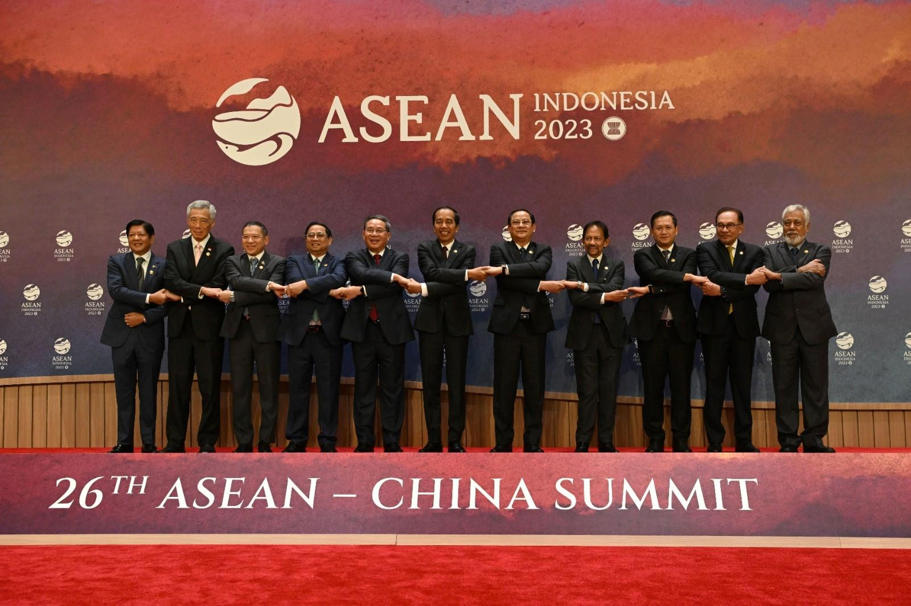
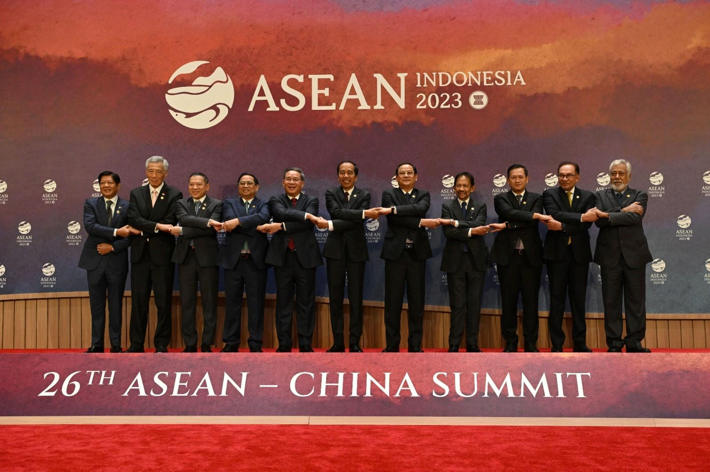
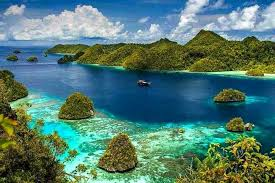
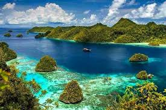
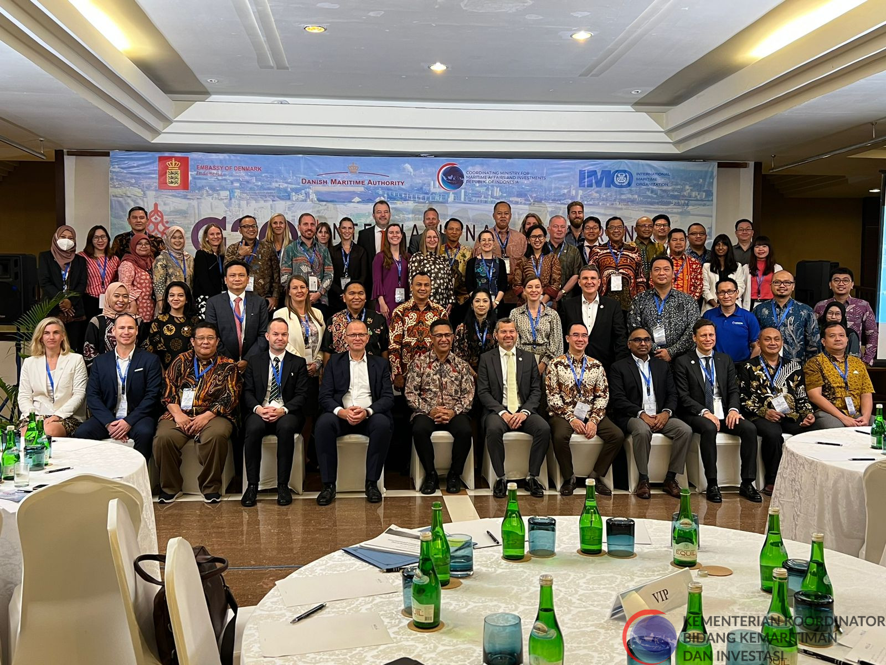
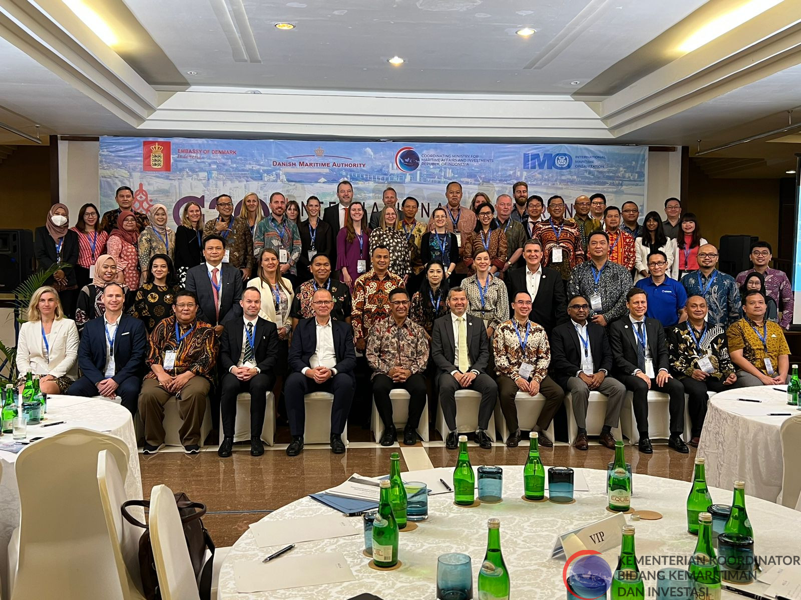

Dari mencari informasi-informasi terkait kerjasama dan SDGs, saya mempelajari betapa pentingnya ekosistem laut dan perairan serta sumber daya alam dan juga pemanfaatannya yang berkelanjutan. Untuk Indonesia yang merupakan negara maritim, kesejahteraan laut penting bagi negara serta masyarakatnya terutama bagi yang berprofesi terkait dengan kelautan seperti nelayan. Dalam mewujudkan kesejahteraan ini, tidak hanya bisa sendiri tetapi sudah ada banyak kerjasama baik antar dua negara, dalam satu kawasan, atau secara keseluruhan. Dengan adanya kerjasama, mereka mendapat kesempatan untuk meningkatkan dan mengembangkan negara dalam berbagai bidang.


 

 

 
